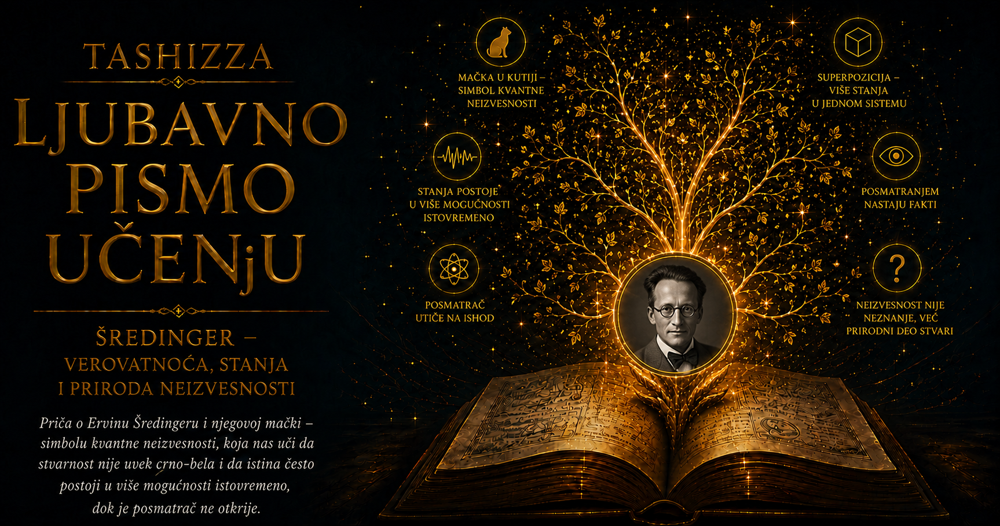

Ljubavno pismo učenju

Ervin Šredinger pripada onoj retkoj vrsti naučnika čije je ime istovremeno postalo deo ozbiljne fizike, popularne kulture i filozofskih rasprava o stvarnosti. Široka publika prepoznaje ga po mački zatvorenoj u kutiji, hemičari svakodnevno koriste pojmove proistekle iz njegove talasne mehanike, a fizičari njegovu jednačinu smatraju jednim od osnovnih jezika kvantnog sveta. Iza tog ogromnog nasleđa nalazio se složen čovek: briljantan matematički fizičar, neumorni tragač za celovitim znanjem, protivnik intelektualne skučenosti, politički izbeglica, provokativan mislilac i ličnost čiji privatni život ne dopušta jednostavnu priču o uzornom geniju.
Rođen je 12. avgusta 1887. godine u Beču, u kulturno raznovrsnoj i materijalno obezbeđenoj porodici. Njegov otac Rudolf vodio je porodičnu fabriku, bavio se botanikom i pokazivao široku radoznalost prema prirodnim naukama, dok je majka Georgina Emilija Brenda Bauer poticala iz porodice povezane sa Bečom i Engleskom. Ervin je odrastao uz nemački i engleski jezik, u domu u kojem su se naučno interesovanje, književnost, umetnost i građanska obrazovanost prirodno preplitali. Prve godine školovanja proveo je uz privatnog učitelja, a zatim je pohađao Akademsku gimnaziju, gde je pokazivao dar podjednako za matematiku, fiziku, klasične jezike i književnost.
Takvo obrazovanje ostavilo je dubok trag u njegovom kasnijem radu. Šredinger nikada nije prihvatio sliku naučnika koji zna sve o veoma uskoj oblasti, a prestaje da postavlja pitanja čim se približi granici svoje discipline. Privlačili su ga filozofija, poezija, antička misao, teorija boja, biologija i problem svesti. Uverenje da različite oblasti znanja pripadaju jednoj stvarnosti postalo je trajna nit njegovog intelektualnog života. Specijalizaciju je smatrao neophodnom za ozbiljan rad, ali je upozoravao da čovek gubi širu sliku ukoliko se rezultati specijalizovanih istraživanja nikada ponovo ne povežu.
Godine 1906. upisao je fiziku na Univerzitetu u Beču, gde su na njega naročito uticali Franc Eksner i Fridrih Hazenerl. Bečka škola negovala je snažno nasleđe Ludviga Bolcmana, jednog od tvoraca statističke mehanike, koji je neposredno pre Šredingerovog dolaska izvršio samoubistvo. Šredinger ga nije lično slušao, ali je Bolcmanov način mišljenja upoznao preko učenika i akademske sredine. Ideja da se pravilnosti velikih sistema mogu razumeti statističkim ponašanjem ogromnog broja mikroskopskih sastojaka pripremila ga je za svet u kojem verovatnoća ima dublju ulogu od privremenog priznanja ljudskog neznanja.
Doktorirao je 1910. godine radom iz oblasti električne provodljivosti izolatora u vlažnom vazduhu, nakon čega je postao asistent u Eksnerovom institutu. Njegovi rani radovi obuhvatali su eksperimentalnu fiziku, radioaktivnost, atmosferski elektricitet, termodinamiku i teoriju boja. Kasnija slava ponekad stvara utisak da se od početka kretao pravo prema kvantnoj jednačini, mada je njegov put bio znatno razgranatiji. Učio je kako se teorijski argument povezuje sa merenjem, kako se procenjuje pouzdanost rezultata i kako se fizički problem prevodi u matematičku strukturu.
Prvi svetski rat prekinuo je akademski život njegove generacije. Šredinger je mobilisan u austrougarsku vojsku i služio je kao artiljerijski oficir, uglavnom na italijanskom frontu. Čak je i tokom vojne službe, kada su okolnosti dopuštale, čitao naučne radove i nastavljao teorijska razmišljanja. Rat je završio rušenjem imperije u kojoj je odrastao, ekonomskim osiromašenjem njegove porodice i neizvesnom budućnošću austrijskih univerziteta. Njegova naučna karijera zato nije izrasla iz mirnog kontinuiteta, već iz sveta koji je izgubio politički i društveni okvir svog detinjstva.
Godine 1920. oženio se Anemari Bertel, poznatu kao Ani, koja će ga pratiti kroz brojne selidbe, politička bekstva i akademske preokrete. Njihov brak trajao je do njegove smrti, ali je bio obeležen Šredingerovim mnogobrojnim vezama i nekonvencionalnim shvatanjem intimnih odnosa. Ani je često podnosila praktični i emocionalni teret života prilagođenog njegovim potrebama. Savremeno čitanje njegove biografije zahteva da se o toj strani govori bez ulepšavanja, naročito zato što pojedini zapisi ukazuju na njegove seksualne odnose sa veoma mladim devojkama. Naučna veličina ne pruža moralno izuzeće, niti intelektualna smelost može izbrisati neravnopravnost i povrede u odnosima sa drugim ljudima.
Posleratne godine proveo je menjajući univerzitete i tražeći položaj koji bi mu pružio dovoljno sigurnosti za istraživanje. Radio je u Jeni, Štutgartu, Breslauu i Cirihu. Upravo je Cirih postao mesto njegovog najvećeg naučnog prodora. Tamo je početkom dvadesetih godina proučavao termodinamiku, statističku fiziku i novu atomsku teoriju, pažljivo prateći radove Luja de Brolja o talasnoj prirodi materije. U atmosferi u kojoj se stara kvantna teorija sve jasnije pokazivala nedovoljnom, Šredinger je tražio matematički opis koji bi atomskim pravilima pružio prirodno jedinstvo.
Krajem 1925. otišao je u švajcarske Alpe, u Arozu, gde je zbog narušenog zdravlja i potrebe za mirom proveo nekoliko nedelja. U biografijama se taj boravak često romantizuje kao trenutak izdvojenog genija koji u planinskoj tišini stvara novu fiziku. Stvarnost je bila složenija, ali je činjenica da je početkom 1926. usledio izuzetno plodan niz radova. U njima je oblikovao talasnu mehaniku i pokazao kako se kvantne energije mogu dobiti rešavanjem jednačine. Za nekoliko meseci nastao je teorijski okvir koji će promeniti fiziku, hemiju i razumevanje materije.
Šredingerova jednačina odmah je privukla pažnju zato što je davala poznate rezultate za atom vodonika, a činila je to matematičkim jezikom koji je mnogim fizičarima bio prisniji od apstraktne matrične mehanike Hajzenberga, Borna i Jordana. Šredinger je pokazao da su dva pristupa matematički ekvivalentna, iako je lično više voleo talasnu sliku. Nadao se da će ona vratiti kontinuitet i razumljivu fizičku predstavu u teoriju koja mu je delovala suviše ispunjena skokovima, diskontinuitetima i pravilima vezanim za čin merenja.
Ironija njegovog najvećeg uspeha sastojala se u tome što nije prihvatao značenje koje je većina vodećih fizičara ubrzo pripisala teoriji. Maks Born je talasnu funkciju protumačio kao amplitudu verovatnoće, dok su Nils Bor i Verner Hajzenberg razvijali pogled prema kojem kvantna teorija zahteva odricanje od klasične slike unapred određenih svojstava i putanja. Šredinger je želeo objektivniji, celovitiji i slikovitiji opis stvarnosti. Stvorio je jedan od najmoćnijih izraza nove fizike, a zatim je decenijama upozoravao da njegova uspešnost u proračunu još ne razrešava pitanje šta talasna funkcija predstavlja.
Godine 1927. nasledio je Maksa Planka na prestižnoj katedri Univerziteta u Berlinu. Tamo se našao među najznačajnijim fizičarima epohe i razvio blizak odnos sa Albertom Ajnštajnom. Obojica su poštovala matematičku uspešnost kvantne mehanike, ali su sumnjala da statističko tumačenje pruža potpunu sliku pojedinačne fizičke stvarnosti. Njihove rasprave nisu bile izraz otpora prema novom znanju; poticale su iz zahteva da teorija objasni sopstvene pojmove i jasno pokaže granicu između onoga što izračunava i onoga što tvrdi o svetu.
Dolazak nacista na vlast 1933. godine prekinuo je njegov berlinski period. Šredinger nije bio Jevrejin i rasni zakoni ga nisu neposredno ugrožavali, ali nije želeo da ostane na univerzitetu sa kojeg su proterivane njegove kolege. Napustio je Nemačku i prihvatio mesto u Oksfordu. Iste godine dobio je Nobelovu nagradu za fiziku, koju je podelio sa Polom Dirakom za otkriće novih plodnih oblika atomske teorije. Međunarodno priznanje učvrstilo je njegov položaj, ali mu nije donelo osećanje pripadnosti engleskoj akademskoj sredini, čiji su mu običaji i društvena uzdržanost ostali strani.
Želja da se vrati u kulturno i jezičko okruženje blisko Austriji navela ga je da 1936. prihvati profesuru u Gracu. Nadao se da će Austrija sačuvati nezavisnost, ali je anšlus iz marta 1938. njegov izbor pretvorio u opasnu zamku. Pokušavajući da zaštiti položaj i slobodu, objavio je izjavu prilagođavanja novom režimu, odluku zbog koje se kasnije duboko stideo. Režim mu ipak nije verovao: otpušten je kao politički nepouzdan i upozoren da bi uskoro mogao izgubiti mogućnost da napusti zemlju.
Šredinger i Ani pobegli su preko Italije, a zatim stigli u Belgiju. Nekadašnji berlinski profesor i dobitnik Nobelove nagrade ponovo je zavisio od viza, poziva i spremnosti drugih da mu pruže utočište. Izlaz je došao iz neočekivanog pravca. Irski državnik Eamon de Valera, koji se i sam interesovao za matematiku, pripremao je osnivanje Dablinskog instituta za napredne studije i želeo je da njegovu školu teorijske fizike predvodi naučnik međunarodnog ugleda. Poziv u Irsku pružio je Šredingeru sigurnost u času kada je Evropa tonula u rat.
U Dablin je stigao 1939. godine, a sledeće godine postao je prvi direktor Škole teorijske fizike novoosnovanog instituta. U Irskoj je proveo približno petnaest godina i taj period smatrao jednim od najsrećnijih u životu. Držao je predavanja, pisao, učestvovao u radu Kraljevske irske akademije i pomagao mladoj državi da izgradi ustanovu međunarodnog značaja. Njegova predavanja okupljala su stručnjake i obrazovanu javnost, jer je umeo da veliko naučno pitanje predstavi bez gubitka njegove složenosti i da slušaocu pokaže zašto se ono tiče šire ljudske kulture.
Upravo su iz dablinskih predavanja održanih 1943. godine nastali temelji knjige „Šta je život?”. Šredinger se pitao kako organizam održava unutrašnju uređenost i kako nasledna svojstva ostaju stabilna kroz generacije uprkos toplotnim fluktuacijama mikroskopskog sveta. Pretpostavio je da nosilac nasledne informacije mora imati oblik složene i stabilne molekulske strukture, koju je opisao kao „aperiodični kristal”. Za razliku od pravilnog kristala čiji se elementi neprekidno ponavljaju, takva struktura mogla bi u svom raznovrsnom rasporedu da nosi bogat zapis.
Šredinger nije otkrio DNK niti je sam razrešio problem gena. Njegovo izlaganje oslanjalo se na postojeća genetička istraživanja, a pojedini fizički detalji kasnije su ispravljeni ili osporeni. Snaga knjige nalazila se u načinu na koji je povezala biologiju sa pitanjima molekulske stabilnosti, strukture i informacije. Među mladim čitaocima koje je podstakla bili su Frensis Krik, Džejms Votson i drugi budući istraživači molekularne biologije. Šredinger je umeo da prepozna granicu između disciplina i postavi pitanje dovoljno jasno da čitava nova generacija poželi da potraži odgovor.
Knjiga je sadržala i razmišljanje o tome kako živi organizam održava red uzimajući iz okoline energiju i materiju pogodne za očuvanje sopstvene organizacije. Njegov izraz „negativna entropija” postao je veoma uticajan, mada savremena termodinamika otvorenih sistema taj proces opisuje preciznijim jezikom. Organizmi ne krše drugi zakon termodinamike; oni održavaju lokalnu uređenost razmenjujući energiju i materiju sa okolinom, dok ukupna entropija šireg sistema raste. Šredingerova zasluga nalazi se u tome što je fiziku života predstavio kao ozbiljan problem koji se može istraživati bez svođenja živog bića na jednostavnu mašinu.
Njegova potraga za celinom vodila ga je i prema filozofiji svesti. Čitao je Šopenhauera, Upanišade i vedantske tekstove, pronalazeći u njima ideju da mnoštvo pojedinačnih svesti možda predstavlja različita pojavljivanja dubljeg jedinstva. Smatrao je da subjekt koji doživljava svet ne možemo jednostavno pronaći kao još jedan predmet unutar tog sveta. Takva razmišljanja pripadala su njegovoj ličnoj metafizici i ne predstavljaju deo eksperimentalno potvrđene kvantne teorije. Ipak, ona pokazuju koliko ga je snažno privlačilo pitanje veze između posmatrača, znanja i stvarnosti.
Godine 1935, podstaknut raspravom koju su otvorili Ajnštajn, Boris Podolski i Natan Rozen, Šredinger je napisao opsežan rad o tadašnjem stanju kvantne mehanike. U njemu je uveo izraz „Verschränkung”, koji danas prevodimo kao kvantna spregnutost ili zapletenost. Kada dva kvantna sistema stupe u interakciju, njihovo zajedničko stanje može postati takvo da se osobine celine ne mogu svesti na dva potpuno nezavisna opisa njenih delova. Šredinger je upravo tu pojavu smatrao karakterističnim svojstvom kvantne teorije.
Ono što ga je uznemiravalo kasnije je postalo jedan od najvažnijih resursa kvantne nauke. Spregnutost danas ima središnju ulogu u istraživanjima kvantne komunikacije, kriptografije, računanja i temelja fizike. Šredingerova istorijska uloga zbog toga poseduje posebnu lepotu: pojavi kojoj nije verovao da je dovoljno objašnjena dao je ime i precizan misaoni oblik, omogućivši kasnijim generacijama da je ispituju eksperimentima o kojima u njegovo vreme nisu mogle ni sanjati. Njegova sumnja nije zaustavljala istraživanje, već ga je primoravala da postane dublje.
U istom radu pojavio se i misaoni eksperiment sa mačkom, zamišljen kao kritika nepromišljenog prenošenja kvantne superpozicije na svakodnevni svet. Životinja je zatvorena u komori sa radioaktivnim atomom, detektorom i mehanizmom koji u slučaju raspada oslobađa otrov. Ako se čitav sistem opiše jednom talasnom funkcijom, formalizam kao da povezuje mogućnost živog i mrtvog stanja. Šredinger je taj groteskni prizor upotrebio da pita gde se završava superpozicija i kako iz kvantnog opisa nastaje određeni ishod koji opažamo.
Mačka je u popularnoj kulturi prerasla u simbol neodlučnosti, paralelnih mogućnosti i svega što je navodno istovremeno „i jedno i drugo”. Njena prvobitna svrha bila je ozbiljnija. Šredinger je upozoravao da matematički uspešan formalizam još zahteva objašnjenje odnosa između mikroskopskog sistema, mernog uređaja i posmatrača. Misaoni eksperiment preživeo je svog tvorca zato što složen problem izražava slikom koju je gotovo nemoguće zaboraviti, ali njegova puna vrednost postaje vidljiva tek kada se vrati pitanju zbog kojeg je nastao.
Rasprave sa Nilsom Borom pokazivale su koliko je Šredingeru bilo važno da fizička teorija pruži razumljivu sliku sveta. Prilikom posete Kopenhagenu 1926. njihovi razgovori bili su toliko dugi i iscrpljujući da su se, prema kasnijim sećanjima, nastavili čak i dok je bolesni Šredinger ležao u krevetu u Borovoj kući. Bor je smatrao da kvantne pojave zahtevaju novi jezik usmeren na ono što eksperimenti mogu pokazati, dok je Šredinger osećao da se odricanjem od jasne slike gubi deo naučnog razumevanja. Njihov sukob pokazuje da se revolucije u nauci ne odvijaju samo između pristalica starog i novog, već i među stvaraocima nove teorije koji različito razumeju njeno značenje.
Posle prodora iz 1926. Šredinger više nije ostvario otkriće sličnog dometa, ali je nastavio da radi u statističkoj fizici, relativnosti, kosmologiji, teoriji boja i pokušajima ujedinjenja fizičkih polja. Njegova težnja prema jedinstvu ponekad ga je vodila u preuranjene tvrdnje. U Dablinu je 1947. sa velikim samopouzdanjem predstavio zamisao o ujedinjenoj teoriji polja, uprkos Ajnštajnovom upozorenju da rezultat još nema dovoljno čvrst oslonac. Očekivani prodor nije usledio, pokazujući da estetska privlačnost jedne velike ideje ne može zameniti dokaze i strpljivu proveru.
Upravo ta epizoda čini njegov život dragocenim za razumevanje nauke. Genijalnost ne donosi trajnu zaštitu od zablude, niti jedno veliko otkriće pretvara sve kasnije pretpostavke u istinu. Ista smelost koja je Šredingeru omogućila da pronađe novi oblik kvantne mehanike mogla ga je navesti da prerano poveruje u nedovršenu teoriju. Naučni autoritet nastaje iz kvaliteta dokaza, otvorenosti prema kritici i spremnosti da se sopstvena zamisao izloži proveri, a ne iz ugleda koji je istraživač stekao prethodnim dostignućima.
Šredinger je 1948. postao irski državljanin, zadržavajući austrijsko državljanstvo. Irska mu je pružila sigurnost tokom godina evropskog rata, a on joj je pomogao da izgradi ozbiljno središte teorijske nauke. Nakon penzionisanja vratio se 1956. u Beč, gde mu je ponuđena posebno ustanovljena profesorska pozicija. Povratak je zatvorio krug jednog života obeleženog nestankom Austrougarske, dva svetska rata, izbeglištvom i stvaranjem fizike koja će promeniti dvadeseti vek.
Poslednje godine provodio je između rada i lečenja. Umro je 4. januara 1961. godine u Beču od posledica tuberkuloze, a sahranjen je u alpskom mestu Alpbah, koje je voleo. Na njegovoj nadgrobnoj ploči uklesana je talasna jednačina. Formula koja opisuje promenu kvantnog stanja tako je postala znak nad mestom na kojem se završio život čoveka neumorno zaokupljenog odnosom promene, trajnosti i reda.
Njegovo nasleđe obuhvata mnogo više od mačke. Šredingerova jednačina otvorila je put razumevanju atoma, molekula, hemijskih veza, čvrstih tela, poluprovodnika i tehnologija koje oblikuju savremenu civilizaciju. Pojam spregnutosti postao je jedan od temelja kvantne informatike, dok je knjiga „Šta je život?” usmerila pažnju fizičara prema molekularnoj osnovi nasleđa. Njegovi filozofski tekstovi sačuvali su pitanje kako rezultate rasutih disciplina ponovo povezati u ljudski razumljivu celinu.
Šredingerova biografija istovremeno sprečava da se znanje pretvori u kult ličnosti. Njegova naučna pronicljivost postojala je pored moralnih slabosti, povremenog političkog kolebanja, intimne neodgovornosti i teorijskih zabluda. Takve protivrečnosti ne menjaju vrednost jednačine, ali menjaju način na koji posmatramo njenog tvorca. Velike ideje mogu prevazići ljude koji su ih stvorili, dok učenje zahteva da delo procenjujemo prema dokazima, a čoveka sagledamo bez potrebe da ga proglasimo ili besprekornim junakom ili bezvrednim grešnikom.
Njegova najvažnija ljudska osobina možda se otkriva u istrajnosti sa kojom je postavljao pitanja i onda kada mu odgovori nisu pružali mir. Mogao je da stvori teoriju, prizna njenu izuzetnu moć i nastavi da sumnja u njeno konačno značenje. U tome se nalazi dragocena vrsta intelektualne skromnosti: sposobnost da sopstveno veliko dostignuće ne prihvatimo kao poslednju reč. Šredinger nas podseća da učenje napreduje kada znanje čuvamo dovoljno pažljivo da ga ne odbacimo, ali i dovoljno slobodno da mu postavljamo nova pitanja.